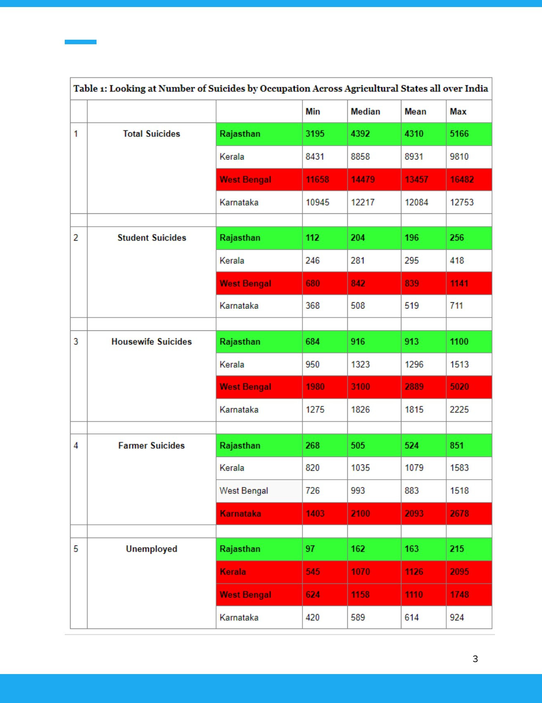

Rajasthan suicide data story


An exploratory data story about reported suicide patterns in Rajasthan. It brings together comparative indicators, maps and literature in a written report.
Files
- PDF · 16 pages
The cultural explanation discussed in the paper is exploratory, not an established causal finding.
By Vaibhav Agarwal.